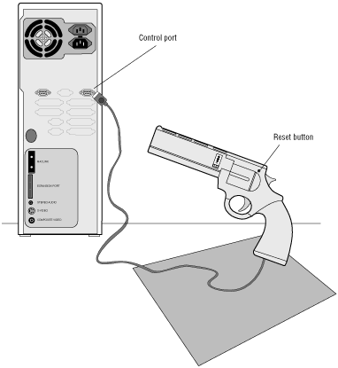

Figure 1: Installing the light gun.
The Light Gun
Driver
The light gun driver is included with the Portfolio operating system
software and installs automatically when you install the operating system.
Updates are provided on the 3DO InfoServer bulletin board (415.261.3405).
Contact the Developer Technical Support staff on the InfoLine
(415.261.3400) for additional information if needed.